第零部分：编译python
0.1 python总体架构
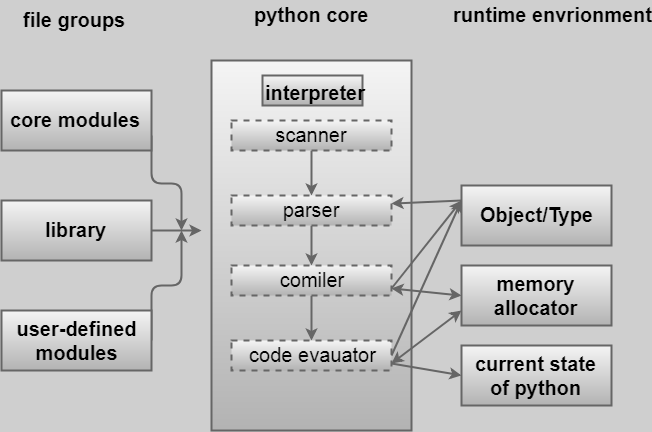0.2 python源代码的组织
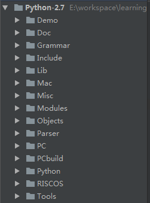
0.3 windows/linux环境 编译 python
linux下编译软件包
1、下载tar包
2、解压tar包
3、./configure --prefix=dest_path --enable-shared
4、make
5、make install
0.4 修改 python, 源代码
修改了PyObject_Print
0.5 注意事项
1、Py_ssize_t 看成 int
2、内存使用的相关函数: 以New结尾的以C++的new操作符视之，以Malloc结尾的以C的malloc视之。
0.6.1 回顾一下c中内存的相关的函数
malloc：空间的申请
函数原型：void* malloc(unsigned size);
malloc()函数有一个参数,即要分配的内存空间的大小.
calloc：空间的申请
函数原型：void* calloc(size_t nelem, size_t elsize);
calloc()函数有两个参数,分别为元素的数目和每个元素的大小,这两个参数的乘积就是要分配的内存空间的大小。
如果调用成功,函数malloc()和函数calloc()都将返回所分配的内存空间的首地址。
malloc和calloc都可以分配内存区，但malloc一次只能申请一个内存区，calloc一次可以申请多个内存区．另外calloc会把分配来的内存区初试化为０，malloc不会进行初始化．
0.6.2 回顾一下c中内存的相关的函数
realloc：重新分配空间
函数原型：void* realloc(void* ptr, unsigned newsize);
realloc是给一个已经分配了地址的指针重新分配空间,参数ptr为原有的空间地址,newsize是重新申请的地址长度
free：释放ptr所指向的一块内存空间
函数原型：free(void*ptr)
0.6.3 回顾一下c中内存的相关的函数
memcpy：拷贝内存空间
函数原形： void *memcpy(void *dest,void *src,unsigned int count);
参数:
dest 目标内存区
src 原内存区
count 要复制的字节数
返回值： 指向dest的指针
0.6.4 回顾一下c中内存的相关的函数
memcpy升级版：memmove
memcpy与memmove的目的都是将N个字节的源内存地址的内容拷贝到目标内存地址中。但当源内存和目标内存存在重叠时，memcpy会出现错误，而memmove能正确地实施拷贝，但这也增加了一点点开销。
memmove的处理措施：
（1）当源内存的首地址等于目标内存的首地址时，不进行任何拷贝
（2）当源内存的首地址大于目标内存的首地址时，实行正向拷贝
（3）当源内存的首地址小于目标内存的首地址时，实行反向拷贝
0.6.5 回顾一下c中内存的相关的函数
memset：初始化所指定的内存空间
函数原形：void *memset(void *buffer,int c,int count);
参数:
buffer 分配的内存
c 初始化内容
count 初始化的字节数
返回值： 返回指向buffer的指针
memset把buffer所指内存区域的前count个字节设置成某个字符的ASCLL值．一般用于给数组，字符串等类型赋值．
第一章 python对象初探
1、在python的世界里一切都是对象
内建类型对象：int, string, list, dict
自定义类型对象：class
2、在c层面对象是怎样实现的
一块连续或者离散的内存，这块内存能在更高的层次作为一个整体
python中，一个对象一旦被创建，它在内存中的大小就是不变了，意味着，要容纳可变长度数据的对象只能在对象内部维护一个指向一块可变大小的内存区域的指针
1.1 Python内的对象
1.1.1 PyObject
PyObject是整个Python对象的核心
PyObject结构体的声明：
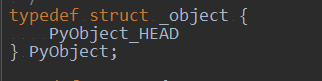1.1.1 PyObject_HEAD
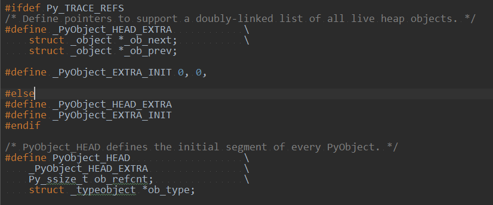1.1.1 以整数对象举个例子
Pyobject中定义了每一个Python对象都必须有内容，这些内容将出现在每一个Python对象所占有的内存最开始的字节。
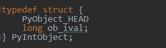1.1.1 以整数对象举个例子
Pyobject中定义了每一个Python对象都必须有内容，这些内容将出现在每一个Python对象所占有的内存最开始的字节。
1.1.2 定长对象和变长对象
PyVarObject
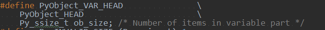 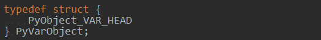1.1.2 定长对象和变长对象
PyObject和PyVarObject在内存布局上的关系
画图1
1.2 类型对象
一个问题：
对象所需的内存空间不同，这个信息在何处存储？
对象所需的内存空间是对象的一种元信息。
PyTypeObject
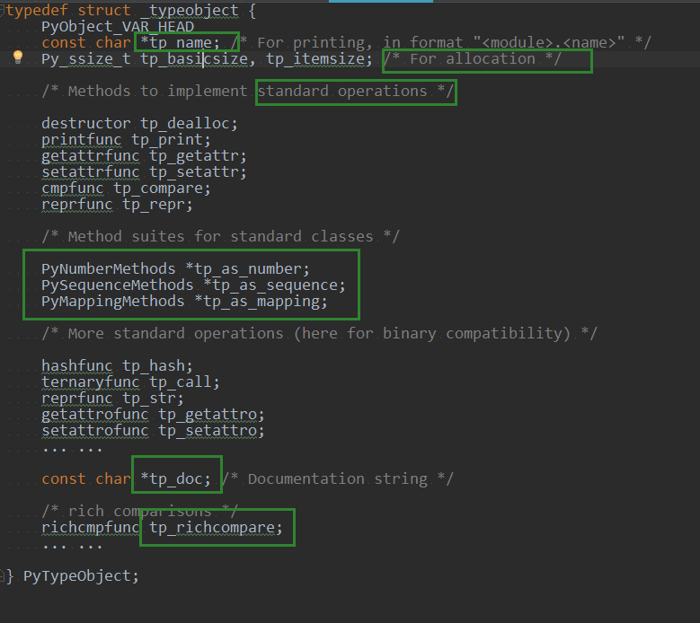1.2.1 对象的创建
如何创建一个整数对象：
两种方法：Python C API, 通过类型对象PyInt_Type
Python C API的两种方式：
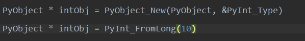1.2.2 对象的行为
三组重要的操作族
1.2.2 对象的行为
三组重要的操作族
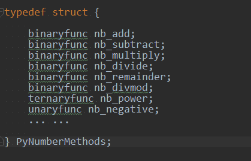1.2.3 类型的类型
PyType_Type
是所有的class的class，被称为metaclass
所有的类型都是PyType_Type的类型的对象
所有的类型都PyTypeObject
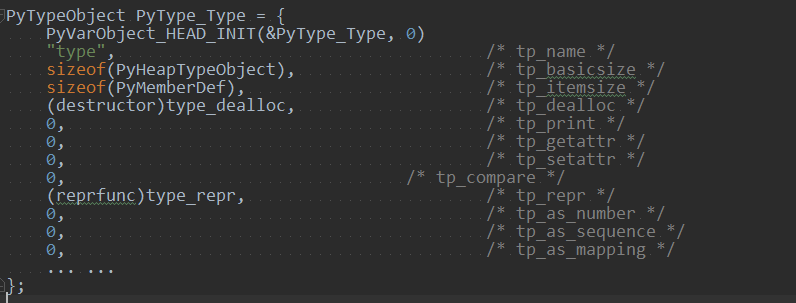
1.3 Python对象的多态性
什么是多态：
在存在继承关联时，调用成员函数时，会根据调用函数的对象的类型来执行不同的函数。
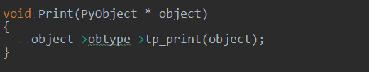1.4 引用计数
ob_refcnt
32位整形变量
通过Py_INCREF(op)和Py_DECREF(op)两个宏来增加和减少一个对象的引用计数
最开始初始化为1，最终引用计数为0时调用析构函数，但不一定会释放空间
1.5 Python对象的分类
Fundamental对象：类型对象, type
Numeric对象：数值对象, int, floot, boolen
Sequence对象：容纳其他对象的序列集合对象, string, list, tuple
Mapping对象：关联对象, dict
Internal对象：Python虚拟机在运行时内部使用的对象
第二章 python中的整数对象
2.1 初识PyIntObject对象
python对象体系的两种区分方式：
第一种：定长对象，变长对象
第二种：可变对象，不可变对象
定长的不可变对象
2.1 初识PyIntObject对象
PyIntObject的结构体
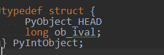2.2 PyIntObject对象的创建和维护
2.2.1对象创建的三种途径
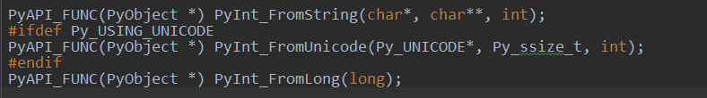2.2.2 小整数对象
对象池技术
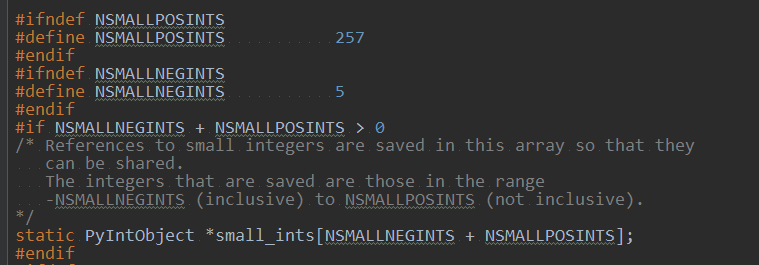2.2.3 大整数对象
另外开辟的空间
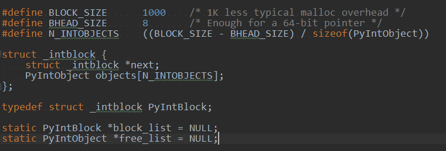2.2.4 整数的添加和删除
分情况使用小整数和大整数
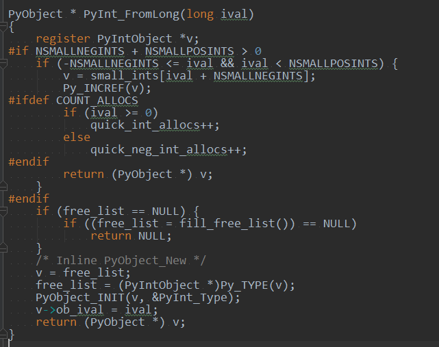2.2.4.1 创建通用整数对象池
ob_type指针作为连接指针
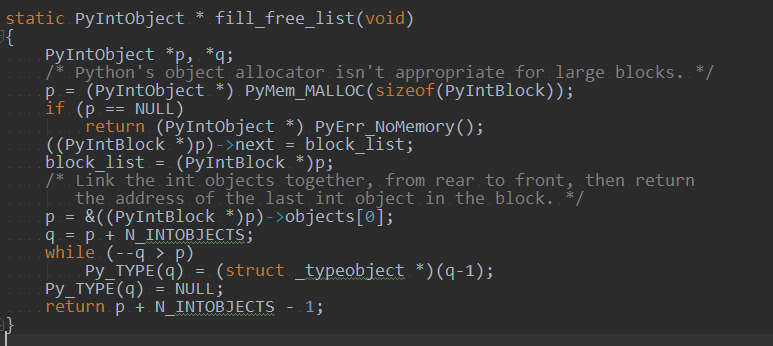2.2.4.1 使用通用整数对象池
删除一个大整数对象，需要进行类型检查
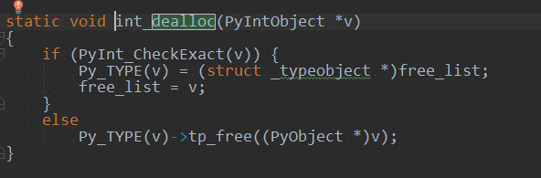2.2.4.1 创建小整数对象池
小整数对象也是在block_list维护的内存上
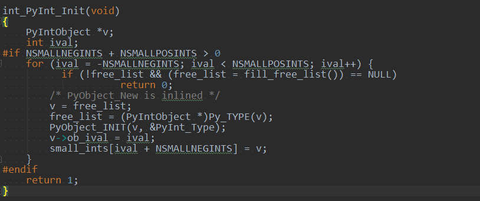